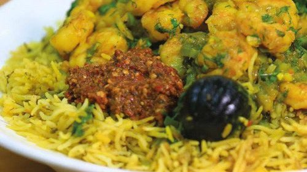

الوصفات الكويتية


مموش ربيان

المقادير
- 2 و1/2 كوب أرز بسمتي منقوع لمدة ساعة
- 1 كوب ماش مغسول ومنقوع
- 5 فص ثوم مهروس
- 1/2 حزمة كزبره خضراء مفرومه
- 1 ملعقة صغيرة هيل بودره
- 2 ملعقة صغيرة كزبره بودره
- 1 ملعقة صغيرة كمون
- 1 ملعقة صغيرة لومي ناعم اسود
- 2 مكعب مرقه دجاج
مقادير الحشوه
- 3 حبة بصل كبيره مفرومه
- 3 ملعقة كبيرة زيت
- 1/2 حزمة كزبره خضراء مفرومه
- كوب و نصف روبيان مجفف منقوع بماء ساخن ومن الممكن إستخدام روبيان طري
- 1 ملعقة صغيرة كزبره
- 1 ملعقة صغيرة كمون
- 1 ملعقة صغيرة هال، بودره
- 1 ملعقة صغيرة لومي اسود ناعم
- مكعب مرق الدجاج
طريقة التحضير
- يصفى الروبيان ويدق بالهاون حتى ينعم قليلا ويوضع جانبا
في مقلاة واسعه يوضع البصل ويحمر بالزيت
- تضاف البهارات ثم يضاف الروبيان والمكعب ويقلب
تضاف الكزبره الخضراء وتخلط
- في قدر كبير يوضع الزيت ثم تضاف 3 ملعقة كبيرة من الحشو المحضر سابقا ويحرك
- ثم يضاف الثوم ويحرك ثم البهارات والكزبره
- يضاف الماش المصفى ويسكب فوقه الماء المغلي ويترك حتى يغلي 7 دقائق
يضاف الأرز (يجب ان يكون الماء فوق مستوى الرز بمقدار1/2 انش)
- يترك على نار هادئه حتى يجف الماء 10 دقائق اخرى